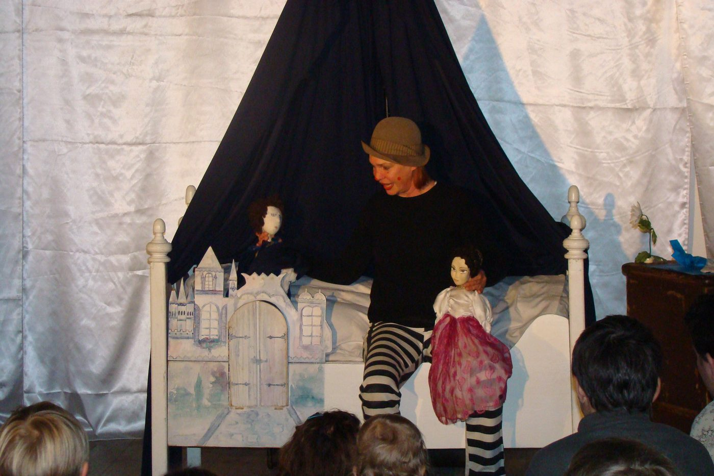

Das Märchen von der Prinzessin in der Suppe
Oder muss es heißen: „Die Prinzessin auf der Erbse“? Was? Die Kinder sollen mitspielen? Und ein Clown ist auch dabei? Na, das kann ja lustig werden!
Mehr zum Stück
Elisa Bartoszewski inszeniert Hans Christian Andersens Märchen von der „ach so feinfühligen Prinzessin“ als besonders reizvolle und fantasieanregende Version. Dezent geschminkt schlüpft sie in die Rolle eines neugierigen Clowns, der dem einsamen Prinzen bei der Brautschau hilft und immer wieder den Kontakt zu den Kindern sucht.
Die jungen Zuschauer werden aktiv ins Geschehen einbezogen: Der Prinz lässt sie an der Suche nach der richtigen Prinzessin teilhaben – Probeliegen auf der Erbse inbegriffen. Lustige, fantasievolle Puppen wie die Schokokuss- und die Fernsehprinzessin, einfallsreiche Kulissen und die verschiedenen Stimmen der Figuren verzaubern das Publikum. (Presse)
Aufführungsdauer ca. 45 Minuten · Bühnenfläche 3 × 3 m · wenn möglich verdunkelbarer Raum · Steckdose 16 A/220 V · Scheinwerfer, Kabel und Stative bringen wir mit.
Dieses Stück anfragen ↗